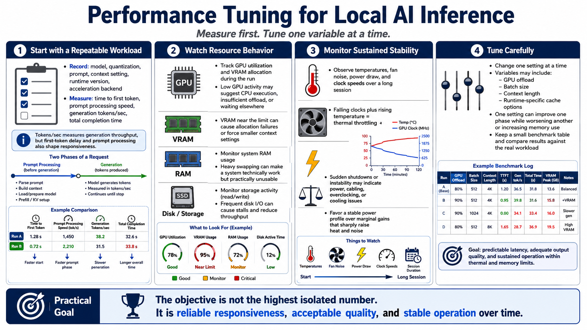

Performance Tuning and Monitoring
Connecting to LMS... Progress: in progress

Narration
Performance tuning begins with a repeatable workload. Record the model, quantization, prompt, context setting, runtime version, and acceleration backend. Then measure time to first token, prompt processing speed, generation tokens per second, and total completion time. Tokens per second describes generation throughput, but it does not capture a long delay while the prompt is processed. Both measurements affect whether a coding assistant or chat interface feels responsive.
Watch GPU utilization and VRAM allocation while the request runs. Low GPU activity may indicate CPU execution, insufficient offload, or a workload that is waiting elsewhere. VRAM near its limit can produce allocation failures or force compromises in context size. Monitor system RAM and storage activity as well; heavy swapping can make a configuration technically functional but operationally unusable.
Thermals, fan noise, and power draw matter during sustained use. Observe temperatures and clock speeds over a long session, not only during startup. Falling clocks combined with rising temperature indicate thermal throttling. Sudden shutdowns or instability may point to power, cabling, overclocking, or cooling problems. Prefer a stable power profile over a marginal performance gain that increases heat and noise substantially.
Change one setting at a time. GPU offload, batch size, context length, and runtime-specific cache options can improve one phase while worsening another or increasing memory use. Keep a small benchmark table and compare results against the real workload. The objective is not the highest isolated number. It is predictable latency, adequate output quality, and sustained operation within the machine's thermal and memory limits.